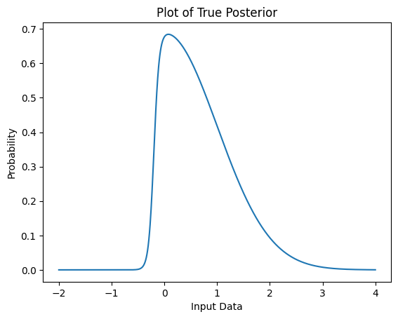
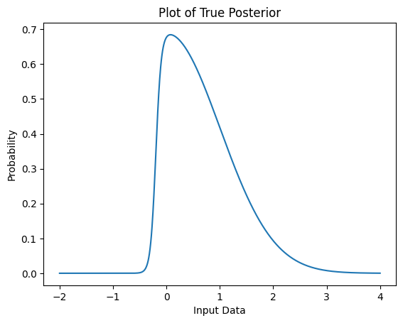
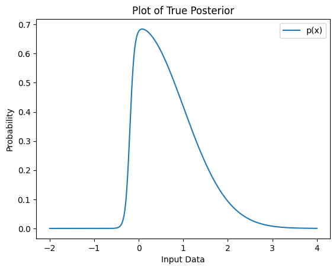
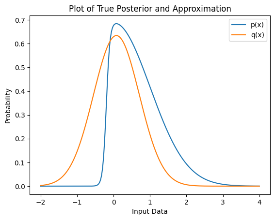

Text(0, 0.5, 'Probability')
December 5, 2022
Many algorithms in the modern machine learning toolbox have had full lives before being canonized in familiar textbooks, and their stories and historical applications are often as interesting and enlightening as their current role in the field. The Laplace approximation is certainly one of those. Today it is an elegantly simple method for approximating posterior distributions that are roughly Gaussian in nature, such as the posterior of the Gaussian process classifier model. That application alone has granted it a place in scikit-learn. It has also been successfully applied to estimating the uncertainty of arbitrary deep learning models without the need to retrain as seen in this 2021 DeepMind paper. But the Laplace approximation wasn’t specifically invented for any of these applications. Its history begins over 200 hundred years ago when Pierre Laplace published a series of seminal texts on the “science of chances.” It later was used in approximating factorials and eventually found itself where it is today. I personally first encountered this method in graduate school and have since been enamored by its simplicity. This blog post will illustrate how exactly this technique functions and some of its interesting applications so that you the reader may have better context when reading sklearn documentation or Bayesian deep learning papers. To that end, we’ll begin with a motivating example of how the Laplace approximation is used most often today before doing a deep dive in the mathematics behind it. We’ll then take a brief detour to see how we can apply this technique to the very different problem of approximating factorials before returning to our initial example with our newfound knowledge of how to solve it.
Suppose we would like to use logistic regression in an instance where uncertainty estimates are crucial, e.g., a binary classifier of radiological data that determines whether a tumor is benign or cancerous. A positive result indicating that a tumor is in fact cancerous is a serious affair, so we should have an understanding as to how certain we are about the diagnosis. We can use Bayes’ Theorem to formulate this problem appropriately. Logistic regression is a parametric model for classification, so our prior belief should relate to the weights and our likelihood should define the relationship between the inputs and outputs of our model. A reasonable prior belief for our weights is that they are Gaussian distributed. Since this is a binary classification problem, we want to constrain our output space to just 0 and 1 which means that both Bernoulli and Binomial distributions are candidates for our likelihood. No matter our choice, however, our posterior belief will be intractable since Gaussian priors are not conjugate with either Bernoulli or Binomial distributions.
Suppose that after feeding our data to this logistic model we draw samples from the posterior which looks like this:
Text(0, 0.5, 'Probability')
The true closed form solution for the posterior1 above is
p(z) = \exp(\frac{-z^2}{2}) \cdot (1 + \exp(-20z-4))^{-1}
Unfortunately we will very rarely have direct access to the closed form solution for the posterior, so we must approximate. Enter: Pierre-Simon Laplace.
The Marquis de Laplace was a busy man. From his service to one Napoleon Bonaparte to his time frequenting gambling dens, there was no shortage of opportunities where Laplace needed to estimate the odds of an event. His contributions to the field of probability are almost unmatched: he rigorously formulated and popularized Bayes’ Theorem, discovered probability generating functions, tied the least squares method to probability, and proved the central limit theorem which underpins the fields of statistics and probability today. But right now we are mostly concerned with a method developed in his 1774 manuscript Mémoires de Mathématique et de Physique.
The Laplace Approximation is a very general method for working with integrals of the form \int^a_b \exp(M \cdot f(x)) dx
where M is some large number and f(x) is at least twice differentiable.
The basic idea is that we can use a Taylor series around the global maximum of the function as an approximation of the original intractable integral. Suppose that f(x) has a global maximum around x_0 and that x_0 is not an endpoint. Then, using the first few terms of the Taylor series we have
f(x) = f(x_0) + f'(x_0)(x-x_0) + \frac{1}{2}f''(x_0)(x-x_0)^2
Knowing that f(x_0) is a global maximum allows us to simplify a bit further since f'(x_0) should be 0.
f(x) \approx f(x_0) - \frac{1}{2}|f''(x_0)|(x-x_0)^2
If we plug this back into our original integral equation we have \int^a_b \exp(M \cdot f(x)) dx \approx \int^a_b \exp(M \cdot f(x_0) - \frac{1}{2}|f''(x_0)|(x-x_0)^2) dx
which further simplifies to \exp(M f(x_0)) \cdot \int^a_b \exp(- \frac{1}{2}|f''(x_0)|(x-x_0)^2) dx
Recall that the Gaussian integral has the form:
\int \exp(-x)^2 dx = \sqrt{\pi}
Assuming that the integral we’re interested in is an indefinite integral as is the case with most probability density functions, the Laplace Approximation allows us to use the Gaussian integral to approximate this sort of intractable integral. Using the Gaussian integral, we can reduce the above equation into the final formulation of Laplace Approximation:
\int^a_b \exp(M \cdot f(x)) dx \approx \sqrt{\frac{2 \pi}{M |f''(x_0)|}}\exp(Mf(x_0))
The accuracy of this approximation improves as M \rightarrow \infty.
Let’s consider an application of the Laplace Approximation to a well-known problem in computer science. Suppose you wish to write a program to quickly compute f(n) = n!. Factorial equations are used all throughout physics, probability, and mathematics with practical uses in computing Bézier curves for computer graphics and time complexity equations for sorting algorithms.
A naive solution may look like:
If we needed to run this function on very large integers thousands of times a second which may often be the case especially in computer graphics, then we need this code to be especially fast. Multiplying increasing large integers in a for loop will probably become a bottleneck rather quickly, so this is a good opportunity to apply an approximation. Let’s begin with the similar and useful Gamma function:
\Gamma(n) = (n-1)! = \int_0^{\infty} \exp(-x) x^{n-1} dx
Our factorial equation can then be written as
n! = \Gamma(n + 1) = \int_0^{\infty} \exp(-x)x^ndx
By performing a change of variables so that x = nz and dx = n dz we can derive the following
= \int_0^{\infty} \exp(-nz) (nz)^n n dz \\ = n^{n+1} \int_0^{\infty} \exp(-nz)z^n dz \\ = n^{n+1} \int_0^{\infty} \exp(-nz) \exp(n \ln z) dz \\ = n^{n+1} \int_0^{\infty} \exp(n (\ln z - z)) dz
The final integral above has the form required for the Laplace Approximation: \int^a_b \exp(M \cdot f(x)) dx since f(z) = \ln z - z is twice differentiable. Recall that as M \rightarrow \infty, the approximation is more accurate so our final approximation of the factorial equation above will be more accurate for larger choices of n.
Using the Laplace approximation, we arrive at Stirling’s Approximation for computing factorials:
\int^a_b \exp(M \cdot f(x)) dx \approx \sqrt{\frac{2 \pi}{M |f''(x_0)|)}}\exp(Mf(x_0))\\ n^{n+1} \int_0^{\infty} \exp(n (\ln z - z)) dz \approx n^{n+1} \sqrt{\frac{2 \pi}{n |f''(x_0)|}}\exp(n f(x_0))
f(z) = \ln z - z, so f'(z) = \frac{1}{z} - 1 and f''(z) = -\frac{1}{z^2}. The max of f(z) is found at z=1, so f(z_0=1) = -1 and f''(z_0 = 1) = -1 as well. With this we arrive at the final approximation:
n! \approx n^{n+1} \sqrt{\frac{2 \pi}{n}}e^{-n}
which in Python would be
def stirling_approx(n):
return (n ** (n+1)) * (np.sqrt((2 * np.pi) / n)) * np.exp(-n)
stirling_approx(5)118.01916795759008The percent error between the actual factorial compuation and approximation in this example is
Note that as n \rightarrow \infty the percent error approaches 0 for this approximation.
Now that we’ve covered the mechanics of the Laplace Approximation and applied it to the simple factorial problem, let’s return to our original problem and approximate that tricky posterior.
We need to know 1) at which point the probability density function is maximized, i.e., the mode of the posterior and then 2) we need to evaluate that point with the second derivative of the probability density function. If we were approximating a multivariate distribution, this then becomes slightly more complex by requiring us to determine the Hessian matrix of the posterior.
Finding the mode of a distribution is typically straightforward. If we are working in a model context like Bayesian logistic regression, then we can typically compute the maximum a posteriori (MAP) estimate directly. Otherwise, we can sample the distribution to determine the mode. Note, however, that distributions of higher dimensions cannot be sampled efficiently so it is generally ideal to work with algorithms where MAP estimations are trivial.
Second derivatives and Hessians unfortunately were historically difficult to determine numerically, but thankfully this is changing. When working with well-studied algorithms like Bayesian logistic regression, it is usually possible to find the necessary derivatives from the loss function either directly or with a numerical techniques like Newton’s method. These tend to be quite compute expensive, but there have been a lot of recent advances that make this process much more efficient.
Let’s take another look at that tricky posterior from earlier:
<matplotlib.legend.Legend at 0x12e95eb20>
We essentially want to find a PDF q(x) to approximate our unknown p(x) above. In the context of continuous probability distributions, we typically prefer to work with the negative log likelihood since it is tends to be easier to optimize than the original likelihood function. Let’s revisit our derivation of the Laplace Approximation to consider the log likelihood \ln p(x). The Taylor approximation is \ln p(x) \approx \ln p(x_0) -\frac{1}{2} (-p''(x_0)) (x-x_0)^2 Exponetiating the above leads to p(x) \approx p(x_0) \exp(-\frac{p''(x_0)}{2}(x-x_0)^2) Again recognizing that \exp(-\frac{p''(x_0)}{2}(x-x_0)^2) is essentially an unnormalized Gaussian PDF, we can formulate the normalized Gaussian q(x) that we can use to approximate our posterior: q(x) = \sqrt{\frac{-p''(x_0)}{2\pi}} \exp(-\frac{p''(x_0)}{2}(x-x_0)^2)
Now we just need to compute the mode of the posterior x_0 and the term p''(x_0). Below we compute the mode by sampling the distribution. Note that this may not always be possible, but in cases where the mode or p''(x_0) cannot be found by sampling we often have direct access to the loss function or posterior PDF from which can we derive a closed form solution for the Laplace approximation.
Now we approximate p''(x_0). For this example, we’ll just use scipy.misc.derivative which is an implementation of the central difference equation for approximation. Again this assumes we can sample the posterior directly.
from scipy.misc import derivative
def ln_p(x): return np.log(p(x))
approx_sec_deriv = -1 * derivative(ln_p, max_point, dx=1e-6, n=2)
print("p''(x_0) ", round(approx_sec_deriv, 4))p''(x_0) 2.5253We can finally plot our approximated Gaussian against the original posterior.
<matplotlib.legend.Legend at 0x108d33580>
As we can see, the approximated posterior is very close to the actual distribution.
We should note the flaws with this method though. Some of our approximations are quite expensive. Numerically determining the second derivative with the central difference equation for a single variable once may not be a big deal, but this will quickly become infeasible as we increase the dimensionality of the distribution. Additionally, if this was part of a larger model training loop, approximating a Hessian matrix every batch would be prohibatively expensive. For the multidimensional case where approximating a Hessian matrix is necessary, recent advances such as Kronecker-factored approximate curvature (KFAC) make the Laplace approximation much more tractable to the point where it can be used in modern deep learning pipelines for general uncertainty estimation as it is in this recent paper.
Beyond computational concerns, the underlying assumptions of the Laplace approximation may not be approriate for all problems. It is assumed that the true posterior is roughly Gaussian, but if it is in fact a heavily skewed Weibull distribution for example, then the approximated Gaussian will probably not be appropriate. Note too that the Laplace approximation puts the most emphasis on estimating the mode of the true distribution. If you are more interested in accurately capturing its variance instead, then other approximation techniques may be more appropriate.
The Laplace approximation is a simple but effective technique for approximating tricky posterior distributions. Though not perfect, it is nonetheless an important tool to have in the toolbox especially when working with Bayesian machine learning techniques. From the Napoleonic battlefield to the modern deep learning pipeline, it has continuously proved its usefulness.
This example can be found on pg 215 Pattern Recognition and Machine Learning by Christopher Bishop↩︎